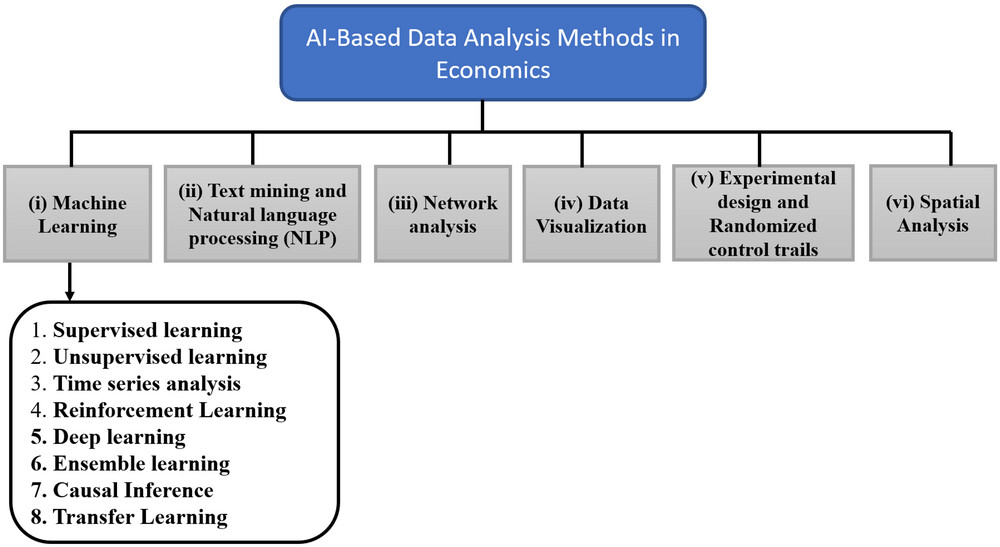
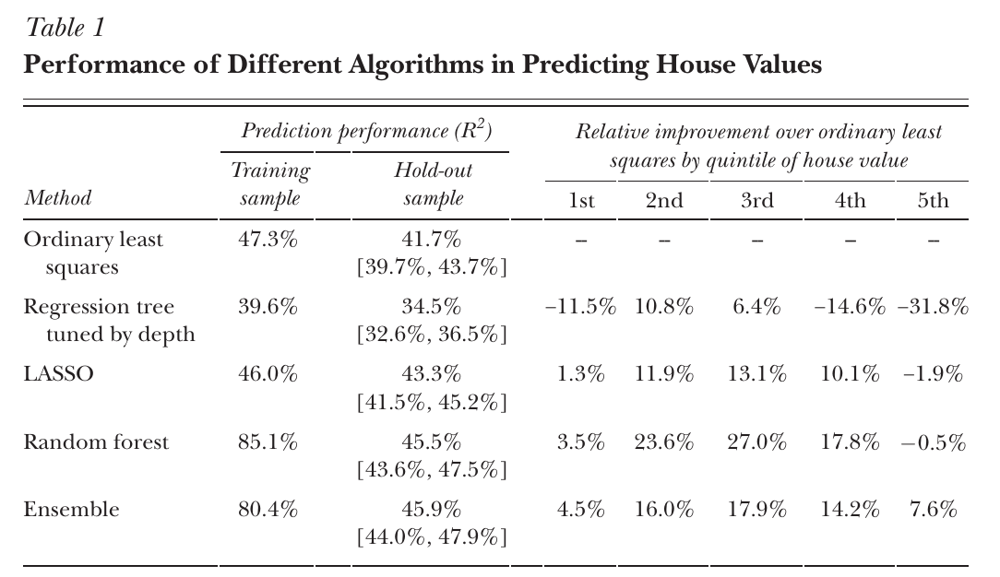
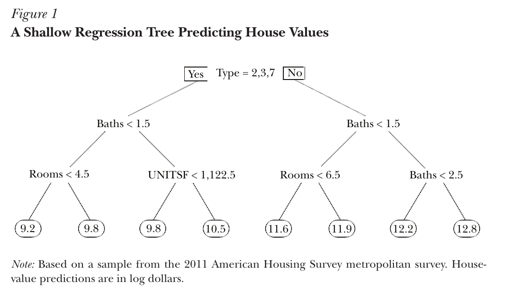

Prediction within a larger analysis: Li and Yu (2025); Belloni et al. (2014)
Heterogeneous treatment effects: Stetter et al. (2022)
Further reading: Bittmann’s guide from OLS to causal machine learning (Bittmann 2025)
Machine learning in a nutshell
If you take away one idea today: ML is a prediction method learns from observations we already have, then we check how well it predicts observations it has not seen
Choose the outcome to predict and the information available when a prediction is made
Fit a prediction rule using one group of observations
Compare its predictions with actual outcomes in a separate group
Report how much better it performs than a simple benchmark
In a causal study, machine learning can help account for differences between groups before estimating an effect
How does Facebook recognize faces in photos?
Algorithms use a large dataset of photos labeled as having a face or not to estimate a function that predicts the presence of a face from pixels .
This similarity to econometrics raises questions:
Are these algorithms merely applying standard techniques to novel and large datasets?
If there are fundamentally new empirical tools, how do they fit with what we know?
Different goals: prediction and parameter estimation
Many economic applications estimate a parameter, such as a treatment effect or price sensitivity
Causal inference in a RF sense asks us to predict outcomes under conditions that were not observed, trying to replicate the gold standard of a RCT
Supervised machine learning methods are often designed to predict an outcome accurately for new observations
Note: Economists can also use prediction methods within procedures that estimate effects
This lecture covers where these methods came from, the three roles they play in empirical economics, and how a methods section reports them
Source: Mullainathan and Spiess (2017), pages 87 to 88.
Evaluating predictions and parameters
Prediction,
Parameter estimation,
Target
The outcome for a new observation
An effect or behavioral parameter
Common techniques
LASSO, random forests, and other prediction methods
OLS, IV, difference in differences, and structural models
Evaluation
Accuracy on data not used in estimation
Identification: the source of variation and its assumptions
Verifiability
Directly testable: predictions and outcomes are both observed
Rests on assumptions about the data-generating process
Source: Mullainathan and Spiess (2017), pages 88 and 92.
Background
Machine learning’s use in applied economics grew over the past 20 years
Period
Development
1984 to 2001
Regression trees (Breiman et al., 1984), the LASSO (Tibshirani, 1996), and random forests (Breiman, 2001)
1990s
Neural networks studied in econometrics, but they “did not catch on at the time”
2001
Breiman’s “two cultures”: statistics relied on data models, while an algorithmic culture grew in other fields
2014
Early reviews for economists: Varian; Einav and Levin; Belloni, Chernozhukov, and Hansen
2017 to 2019
Mullainathan and Spiess; causal forests (Wager and Athey); Athey and Imbens’s review for economists
2020 to 2025
Reviews and special issues in agricultural and applied economics: Storm et al. (2020); Maruejols et al. (2025)
Sources: Athey and Imbens (2019), pages 686 to 688, 696 to 698, and 701; Mullainathan and Spiess (2017), page 87; Storm et al. (2020); Maruejols et al. (2025).
Why economists adopted machine learning
More readily available access to “big data”
Properties: many units, many variables per unit, and unstructured sources such as satellite images and text
Challenge organizing and studying this type of data (or even to decide which variables to construct) without a simplifying conceptual framework
Better data allow for (1) sharper tests of existing models, (2) tests of theories that had previously been difficult to assess, and (3) assistance choosing controls or functional forms
Prediction questions
Some policy problems require an accurate forecast and no causal parameter
Sources: Athey and Imbens (2019), pages 686 to 687; Mullainathan and Spiess (2017), pages 88, 98, and 102, Einav and Levin (2014)
Why adoption was slow
Economics journals emphasize formal properties of estimators, such as consistency and asymptotic normality, which early machine learning methods did not provide
However, recent work established inference for adapted methods, including double selection and causal forests
Sources: Athey and Imbens (2019), pages 686 to 687; Mullainathan and Spiess (2017), pages 88, 98, and 102.
Machine learning within the AI-based tool landscape

Source: Bahoo et al. (2025), Section 4.3 and Figure 6.
How machine learning works
How a house-price prediction rule learns
Imagine we have recent home sales and want to predict the sale price of another house
For each sold house, record its sale price and characteristics such as size and location
Set aside some houses before fitting a model
Use the remaining houses to fit a rule that turns characteristics into predicted prices
Measure each mistake by comparing a prediction with the actual sale price
For a house that sold for $300,000, a prediction of $320,000 misses by $20,000
Is this rule sufficient, or should it be adjusted to reduce the average mistake on the houses used for fitting?
We cannot directly calculate expected loss because we do not observe every possible future house.
Instead, we use the data we have:
Training data: Choose a prediction rule that minimizes average loss across observed houses. This is called empirical loss.
Source: Mullainathan and Spiess (2017), pages 89 to 90
Testing the prediction rule
Test data: Apply the fitted rule to houses that were set aside and not used to train the model.
Evaluate: Calculate average loss on the test houses to estimate how well the rule predicts new observations.
Why? A rule that performs well on training data may not predict well on new data.
The next paper reports held-out as a summary of predictive fit. Higher held-out means better predictions relative to predicting the same average for every house
Source: Mullainathan and Spiess (2017), pages 89 to 90
An example: predicting house values with OLS and machine learning

Using data on 51,808 homes from the American Housing Survey:
Fit OLS and several machine learning models using 10,000 homes and 150 characteristics
Predict values for the remaining 41,808 homes
Compare prediction accuracy using held-out
Two findings:
Random forest: 45.5% held-out , compared with 41.7% for OLS
Random forest: 85.1% training , but only 45.5% held-out
Source: Mullainathan and Spiess (2017), pages 89 to 90 and Table 1.
How does a regression tree predict house values?
Unlike OLS, a regression tree does not require us to specify a linear relationship. Instead, it divides houses into groups with similar values.

Start with all houses in one group
Find the yes-or-no split that produces the greatest reduction in squared prediction error (here, house type)
Repeat within each new group, using characteristics such as bathrooms, rooms, and square footage
Predict the value of a house using the average value of houses in its final group (a leaf)
Source: Mullainathan and Spiess (2017), pages 90 to 91 and Figure 1.
Why not keep dividing the tree?
Each additional split allows a regression tree to fit the training houses more closely.
More splits create smaller groups of similar houses
Smaller groups can reduce prediction errors in the training data
But very specific groups may capture patterns unique to those houses
Those patterns may not hold for new observations
Overfitting occurs when a model fits the training data closely but predicts poorly on new data.
Regularization limits model flexibility to improve out-of-sample prediction.
Source: Mullainathan and Spiess (2017), pages 91 to 93 and Table 2.
How do we choose the right tree depth?
A deeper tree may fit the training data better, but how deep should it be?
Cross-validation evaluates different model settings using only the training data.
Divide the training data into several groups (folds)
Fit the model using all but one fold
Predict outcomes for the excluded fold and calculate prediction error
Repeat until every fold has been excluded once
Choose the tree depth with the lowest average prediction error
Then fit the selected model on all training data and evaluate it on the held-out test data.
Sources: Mullainathan and Spiess (2017), pages 92 to 93; Bittmann (2025), Section 3.
How do the methods differ?
Each method learns a prediction rule from training data, but differs in how it generates predictions and controls complexity.
Method
How it predicts
How it controls flexibility
OLS
Estimates a linear combination of characteristics
Researcher specifies variables and interactions
Regression tree
Divides observations into groups
Limits on tree depth and group size
Sources: Mullainathan and Spiess (2017), pages 92 to 94 and Table 2; Athey and Imbens (2019), pages 690 and 695 to 699.
How do the methods differ? (continued)
Method
How it predicts
How it controls flexibility
LASSO
Estimates a linear combination of characteristics
Penalizes coefficients, shrinking some to zero
Random forest
Averages predictions from many trees
Randomization, averaging, and tree settings
Common goal: Minimize prediction error on new, unseen observations.
Sources: Mullainathan and Spiess (2017), pages 92 to 94 and Table 2; Athey and Imbens (2019), pages 690 and 695 to 699.
Examples of how machine learning is used in empirical economics
1. Prediction as the objective: Predicts an outcome, such as household food insecurity
2. Prediction within a larger analysis: Selects the variables that enter an economic model or a treatment-effect regression
3. Heterogeneous treatment effects: Estimates how a treatment effect varies across farms or households
Sources: Mullainathan and Spiess (2017); Athey and Imbens (2019), pages 686 to 688; Maruejols et al. (2025).
Role 1: Prediction as the objective
Zhao et al. (2025): predicting calorie poverty
Research question: Can household and market characteristics help identify households at risk of inadequate calorie intake?
Use three days of food records to measure calorie intake for 1,080 rural households
Classify each household as calorie poor or not calorie poor
Use household, village, and food-market characteristics to predict that classification
Fit a random forest, LASSO, and logit model using 756 households
Evaluate predictions on the remaining 324 households
Unlike house values, the outcome is binary: a household is either classified as calorie poor or not.
LASSO estimates coefficients while penalizing their absolute magnitude.
As the penalty increases, some coefficients shrink to zero.
In Li and Yu (2025):
Tenfold cross-validation determines the penalty
Organic and Japan have coefficients of zero at the selected penalty
Price remains because the authors exclude it from the penalty
The excluded attributes provide little additional predictive information in this fitted model, given the other attributes.
Does a coefficient of zero mean consumers do not value the attribute?
Source: Li and Yu (2025), Section 3.1, Figure 2, and Table 4.
LASSO changes willingness-to-pay estimates
Estimated willingness to pay relative to China, in euros per kg:
Apple attribute
All attributes
After LASSO selection
France
1.20
1.53
Italy
1.42
1.40
Small apples
1.30
1.41
Organic
−0.04
Excluded
Source: Li and Yu (2025), Section 3, Tables 6 and 7.
What changes when LASSO selects attributes?
After removing the selected attributes, estimated willingness to pay changes for some of the remaining characteristics.
LASSO selects variables based on their contribution to the model’s predictive objective, subject to its penalty.
But the variables that produce the best predictions are not necessarily the variables we need to estimate a particular economic parameter.
Source: Li and Yu (2025), Section 3, Tables 6 and 7.
Role 3: Heterogeneous treatment effects
How does prediction help estimate an effect?
Suppose an agri-environment program encourages farmers to reduce fertiliser use.
The research question is: Do programs have the same effect on every farm?
The average treatment effect tells us how participation changes fertiliser use across farms.
But the effect may differ depending on:
Farm size
Location
Crop production and yield potential
Other farm characteristics
Sources: Athey and Imbens (2019), pages 701 to 704; Stetter et al. (2022), Sections 2.3 and 4.1 to 4.3.
Conditional average treatment effects
Conditional average treatment effects (CATEs) describe how estimated treatment effects differ across farms with different characteristics.
Sources: Athey and Imbens (2019), pages 701 to 704; Stetter et al. (2022), Sections 2.3 and 4.1 to 4.3.
How does a causal forest differ from a regression tree?
A regression tree divides observations into groups to predict an outcome.
A causal forest seeks groups with different treatment effects.
Predict treatment participation using observed characteristics
Predict the outcome using observed characteristics
Account for those predicted relationships when comparing treated and untreated farms
Use many trees to estimate how treatment effects vary across farm characteristics
The goal: Estimate treatment-effect heterogeneity rather than minimize ordinary outcome prediction error.
Sources: Athey and Imbens (2019), pages 701 to 704; Stetter et al. (2022), Sections 2.3 and 4.1 to 4.3.
Stetter et al. (2022): do program effects differ across farms?
Research question: Does participation in an agri-environment scheme change farm outcomes, and do those effects vary across farms?
Observe 2,758 Bavarian farms in 2014, including 1,641 program participants
Collect farm characteristics, program participation, and environmental outcomes
Use machine learning to account for observed differences between participating and nonparticipating farms
Estimate heterogeneous treatment effects using a causal forest
The authors examine four outcomes, including fertiliser expenditure, pesticide expenditure, land-use diversity, and emissions.
Source: Stetter et al. (2022), Sections 2.3, 4.1, and 4.2.
Which farms have detectable program effects?
Outcome
Share of farms with a statistically detectable effect
Fertiliser expenditure
33% show reductions
Land-use diversity
55% show increases
Pesticide expenditure
7% show improvements
Emissions
Under 1% show reductions; about 4% show increases
Among farms with detectable reductions in fertiliser expenditure, the estimated reduction averages €14 per hectare. Estimated effects vary by location, farm size, and yield potential. Policy relevance: Differences in estimated effects may inform how program payments are targeted.
Source: Stetter et al. (2022), Sections 5.2, 5.3, and 6 and Table 3.
What makes a causal forest estimate credible?
A causal forest can estimate differences in treatment effects, but machine learning alone does not establish causality.
The analysis relies on two important assumptions:
Selection on observables: After accounting for recorded characteristics, treated and untreated farms are comparable in their potential outcomes
Overlap: Farms with similar characteristics have a positive probability of participating or not participating
Stetter et al. exclude 23 farms that lack suitable comparisons and examine sensitivity to unobserved confounding.
The distinction: Machine learning helps estimate relationships; causal identification determines whether they can be interpreted as treatment effects.
Source: Stetter et al. (2022), Sections 4.3 and 5.1.
What role does machine learning play in economic research?
Role
Research objective
Contribution of ML
Prediction
Identify households at risk of calorie poverty
Improve classification accuracy
Model selection and estimation
Estimate preferences or a coefficient of interest
Select variables and controls
Heterogeneous treatment effects
Estimate how program impacts differ across farms
Flexibly estimate differences in treatment effects
Sources: Mullainathan and Spiess (2017); Athey and Imbens (2019); Zhao et al. (2025); Li and Yu (2025); Belloni et al. (2014); Stetter et al. (2022).
Three questions to ask when reading a paper
What is the quantity the researchers want to estimate?
What does machine learning contribute to that objective?
What assumptions are needed to interpret the results?
Sources: Mullainathan and Spiess (2017); Athey and Imbens (2019); Zhao et al. (2025); Li and Yu (2025); Belloni et al. (2014); Stetter et al. (2022).
Reporting a machine learning method
What to report in a machine learning methods section
Item
Example
1. What the method does in the study
Zhao et al. use it to predict calorie poverty
2. What is predicted and which information is used
Calorie poverty from household and market characteristics
3. Which observations are used for fitting and testing
70% training, 30% test
4. How method settings are chosen
Cross-validation; number of trees
5. How well it performs on test observations
Classification accuracy, compared with logit
6. If effects are claimed, what supports the causal comparison
Stetter et al. discuss comparable farms and overlap
7. How another researcher could repeat the analysis
Software, package versions, random seed, and code
Sources: Zhao et al. (2025); Li and Yu (2025); Stetter et al. (2022); Athey and Imbens (2019), pages 686 to 687.
What to consider for your proposal
The role: does the question concern predicting an outcome, selecting variables, or how an effect varies?
The claim: does the conclusion require a causal effect? If so, what is the design, and where does machine learning enter it?
The benchmark: which simpler model or rule should the method outperform?
The evidence: which out-of-sample measure, or which identification check, will the paper report?
References
Athey, Susan, and Guido W. Imbens. 2017. “The State of Applied Econometrics: Causality and Policy Evaluation.”Journal of Economic Perspectives 31 (2): 3–32. https://doi.org/10.1257/jep.31.2.3.
Bahoo, Salman, John W. Goodell, Rachid Rhattat, and Subhan Shahid. 2025. “Artificial Intelligence in Economics Research: What Have We Learned? What Do We Need to Learn?”Journal of Economic Surveys 39 (5): 2194–214. https://doi.org/10.1111/joes.12694.
Belloni, Alexandre, Victor Chernozhukov, and Christian Hansen. 2014. “Inference on Treatment Effects After Selection Among High-Dimensional Controls.”Review of Economic Studies 81 (2): 608–50. https://arxiv.org/abs/1201.0224.
Bittmann, Thomas. 2025. “A Practical Guide from Ordinary Least Squares to Causal Machine Learning.”International Food and Agribusiness Management Review 28 (2): 456–85. https://doi.org/10.22434/IFAMR.1087.
Li, Yi, and Xiaohua Yu. 2025. “Attribute Non-Attendance in the Choice Experiment with Machine Learning: WTP for Organic Apples in Germany.”International Food and Agribusiness Management Review 28 (2): 374–90. https://doi.org/10.22434/IFAMR.1133.
Maruejols, Lucie, Xiaohua Yu, and Lauren Chenarides. 2025. “Machine Learning in Applied Economics and Agribusiness: Emerging Applications and Integration with Traditional Methods.”International Food and Agribusiness Management Review 28 (2): 237–40. https://doi.org/10.22434/IFAMR.0001.
Mullainathan, Sendhil, and Jann Spiess. 2017. “Machine Learning: An Applied Econometric Approach.”Journal of Economic Perspectives 31 (2): 87–106. https://doi.org/10.1257/jep.31.2.87.
Stetter, Christian, Philipp Mennig, and Johannes Sauer. 2022. “Using Machine Learning to Identify Heterogeneous Impacts of Agri-Environment Schemes in the EU: A Case Study.”European Review of Agricultural Economics 49 (4): 723–59. https://doi.org/10.1093/erae/jbab057.
Storm, Hugo, Kathy Baylis, and Thomas Heckelei. 2020. “Machine Learning in Agricultural and Applied Economics.”European Review of Agricultural Economics 47 (3): 849–92. https://doi.org/10.1093/erae/jbz033.
Zhao, Longqiang, Minda Yang, Shi Min, and Ping Qing. 2025. “Prediction of Household Food Insecurity in Rural China: An Application of Machine Learning Methods.”International Food and Agribusiness Management Review 28 (2): 296–316. https://doi.org/10.22434/IFAMR1137.